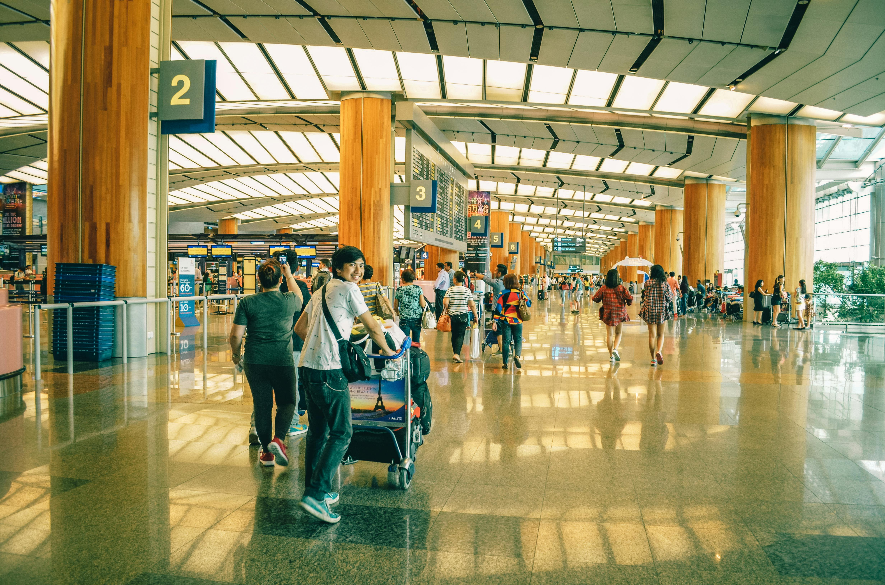

Booking Guide
Not sure where to start? No problem! Follow our simple guide to when and where you want to take your
first trip! Book on cheaper days
Scan for booking errors
Be flexible with your departure dates
*Hint: Always search for flights incognito, that way your cookies aren’t tracking your travel dates and
prices.
The prices you’re seeing will stay constant instead of gradually going up!


Start Small
Begin with a short trip to a nearby destination. This helps ease you into the travel experience without
overwhelming yourself.
Research and Plan
Research your destination, plan your itinerary, and be prepared. Having a basic understanding of the place
you're visiting can alleviate anxiety and enhance your overall experience.
Travel with a Freind
If possible, travel with a friend or a group. Having a companion can provide support, share the experience,
and make the journey more enjoyable.
Embrace Uncertainty
Document Your Journey
Capture your experiences through photos or a travel journal. Reflecting on your journey can enhance the
overall enjoyment and serve as a lasting memory.
Pack Light
Pack only essentials to make your luggage more manageable. Check the weather forecast and pack accordingly.
Travel Insurance
Invest in travel insurance to cover unexpected events such as trip cancellations, medical emergencies, or
lost luggage.
Copy Important Documents
Make photocopies or digital copies of your passport, ID, travel insurance, and other important documents.
Keep them separate from the originals.
Inform Someone About Your Plans
Share your travel itinerary with a friend or family member so someone knows your whereabouts.
Prepare Physically
Travel in general usually requires a lot of walking and standing. Even doing a little bit of yoga everyday
can help prepare you for long flights!
Drink plenty of water, especially if you're in a different climate. Dehydration can affect your energy
levels and well-being.
Learn Basic Phrases
Learn a few local phrases in the language of your destination. It can go a long way in communicating and
showing respect.
Be Open to Trying Local Cuisien
Try local foods for an authentic experience. Be adventurous, but also mindful of your dietary preferences
and restrictions.
Stay Connected
Keep your phone charged and carry a power bank. Install useful travel apps for maps, translation, and
currency conversion.
Embrace Local Costums
Respect local customs and traditions. Familiarize yourself with cultural norms to avoid unintentional
disrespect.
Saftey First:
Be aware of your surroundings, secure your belongings, and trust your instincts. Use well-lit and populated
areas, especially at night.
Budget Wisely
Set a budget for your trip and try to stick to it. Keep track of your expenses to avoid overspending.
Travel During Off Peak Times
If possible, travel during off-peak seasons to avoid crowds and potentially get better deals on
accommodations and activities.
Learn Local Transportation Options
Familiarize yourself with local transportation options, whether it's public transport, rideshares, or bike
rentals.
Pack a First Aid Kit
Include basic medical supplies such as pain relievers, bandages, and any necessary prescription medications.